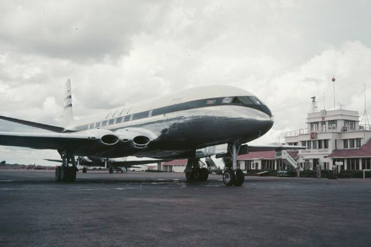
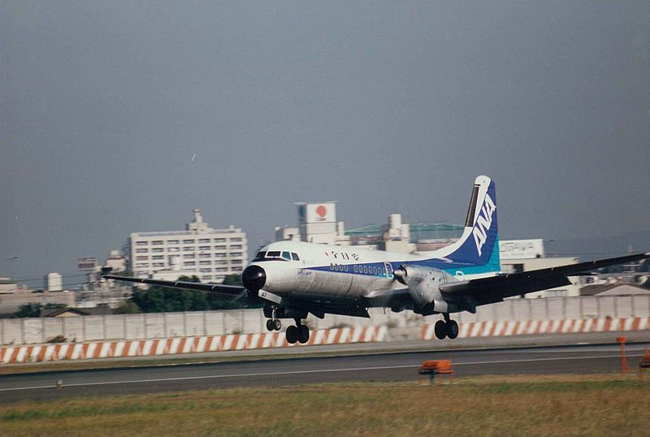
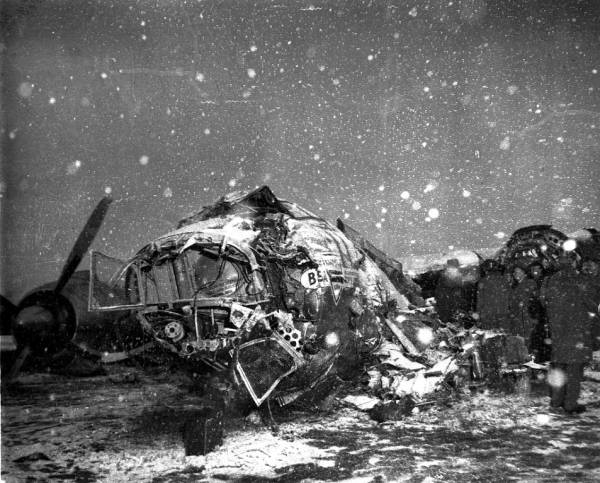
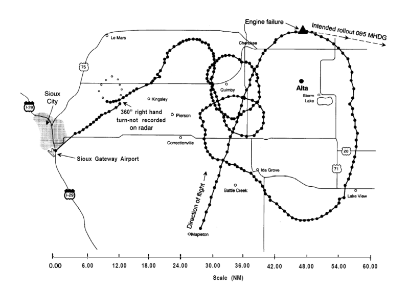
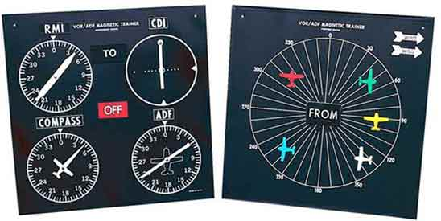
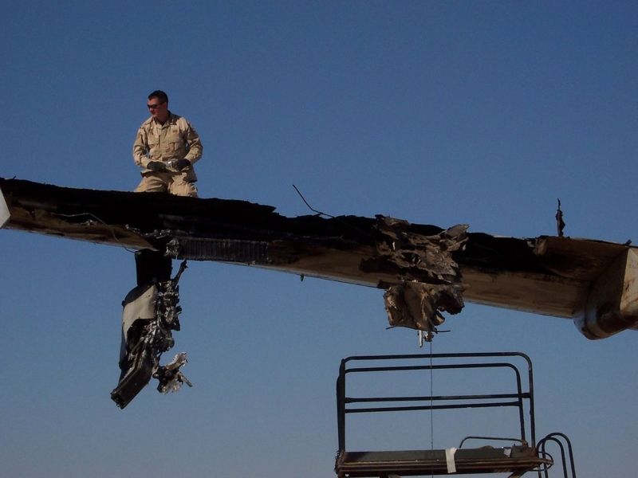

なかじに教えてあげたい航空機事故たちを適当にチョイスしてみた
執筆日時：

先週は @nakaji 氏と高知へ遊びに行った。カツオはもちろん、あんまり食ったことのないウツボやらも堪能ました。
ごちそうさま！
――それはそうと、その席で。
だるやなぎ氏と榊さんが航空機やなんかの難しい話をしてるのを聞きながら、「へ～」とか「ほぉ～」とか言いながら過ごしていました。「学がない」というと元も子もないのですが、いろんなことに興味を持つとか、そのことについて調べるとか、そういった人間らしいところが自分には乏しいのが残念。
ちょっと暴走してしまって @nakaji 氏を置いてきぼりにしてしまったよう。というわけで、今回は反省を兼ねて、にわか航空機事故ファン（ぉぃ）の私がいくつか“知っておくべき航空機事故”をいくつか紹介したいなと思う。
その前にいくつか言い訳をしておくが、自分はそんなに飛行機に詳しくないし、実を言えばそれほど興味があるわけでもない。いくつかの印象的な機種は覚えているが、777 と 767 の区別がつくかも怪しいところだ。ただ、いくつかの TV 番組を通じて、航空機を安全に飛ばすことにどれだけのコストと情熱がかけられているのかを知り、ちょっと感動して記憶に留めておいただけに過ぎない。
コメット連続墜落事故 - Wikipedia
どれから始めようか少し迷ったが、やはりこの事故から始めなければならないだろう。

デ・ハビランド社製 DH.106 コメット。“彗星”という意味をもつこの機体は、イギリスが開発した世界初のジェット旅客機だ。今の感覚で見てもとても美しく、洗練されていて、第二次世界大戦直後に作られたものとは信じがたい。
コメットの乗客数は、従来のプロペラ機よりも少なく、航続距離も短かった。太平洋の横断はおろか、大西洋の横断も不可能。しかし、従来の2倍の速度で天候の影響を受けにくい高高度を飛行するため、時間に正確で、乗り心地も快適だった。限られた人たちだけが楽しめるプレミア感もまた、人々の憧れを掻き立てただろう。航空会社も争ってコメットを求め、デ・ハビランド社は大量のバックオーダーを抱え、うれしい悲鳴を上げていた。
しかし1954年1月、シンガポール発ロンドン行きの英国海外航空781便が、経由地であるローマのチャンピーノ空港を離陸した約30分後、イタリア・エルバ島沖のティレニア海で墜落。英国海外航空はコメットの運航を中止した。
当初はテロの疑いもかけられたようだが、結局原因はよくわからない。とりあえず疑わしい部分を改修して再度運航を開始したが、そのわずか3カ月後、今度はロンドン発ヨハネスブルグ行きの南アフリカ航空201便がおなじティレニア海に墜落。原因は思っていた以上に深刻であることが明らかになる。
当時のイギリス首相ウィンストン・チャーチルは、費用や人員の投入を惜しまぬ徹底解明を指示。イギリスの威信をかけた原因調査は、コメットの破片を集めて機体を組み立てたり、実機をプールに沈めて離着陸時の負荷を再現するといった大掛かりなものになる。
結局、原因は金属疲労だった。当時はまだ金属疲労があまり知られておらず、航空機の耐久性と運用限界についても未知数な点が多かった。悲劇的な事故ではあったが、のちの事故調査手法や安全への取り組みに大きな影響を与えた事故でもあった。
なお、デ・ハビランド社は一連の事故によって業績が悪化、1959年に同じイギリスの航空機メーカーのホーカー・シドレー社（現在のBAEシステムズ）に吸収合併され消滅した。
全日空松山沖墜落事故 - Wikipedia

1966年は国内における旅客機の墜落事故の当たり年だったが、そのトリを飾ったのがこの事故。この年5回目の事故であった。
- 全日空羽田沖墜落事故 - Wikipedia
- カナダ太平洋航空402便着陸失敗事故 - Wikipedia
- 日本航空羽田空港墜落事故 - Wikipedia
- 英国海外航空機空中分解事故 - Wikipedia
- 全日空松山沖墜落事故 - Wikipedia
一番有名なのは英国海外航空機空中分解事故かな。この飛行機には会社からボーナスとして世界旅行をプレゼントされたアメリカ人団体客が乗り込んでいたこともあり、機長は富士山をとおる有視界飛行（VFR）を選択したらしい（現在では計器を頼りに飛ぶ IFR が原則）。そこで“山岳波”と呼ばれる特殊な乱気流に巻き込まれて墜落した。
松山空港沖の墜落事故は、大阪発松山行きの全日空533便（YS-11）が起こした事故。視界不良のためオーバーランの危険があったため、ゴーアラウンド（着陸復航：着陸のやり直し）を試みたものの、そのまま伊予灘に墜落した。パイロットのミスと推測されているが、当時は旅客機にコックピットボイスレコーダーとフライトデータレコーダーを搭載していなかったこともあり、事故調査委員会は墜落原因を特定することができなかった。以後、この二つは搭載が義務化されている。また、滑走路が長ければオーバーランの危険がなく、ゴーアラウンドの必要もなかった。そのため、事故の教訓として地方空港で滑走路の拡張が進められたが、これがのちのジェット化に割と役だったらしい。
この事故はぶっちゃけそれほど有名ではないが、まぁ、松山に住んでるんだから知っといてもいいかも。
教訓：コックピットボイスレコーダーとフライトデータレコーダー（ブラックボックスと呼ばれたりもする）は事故原因の究明に欠かせません
テネリフェ空港ジャンボ機衝突事故 - Wikipedia
航空機事故ファン（不謹慎な！）のなかでとくに人気の高いのがこの事故。ジャンボジェット機同士が滑走路上で衝突するというシチュエーションなど、そうそうないだろう（あってほしくないわ！）。
1977年3月27日、現場はスペイン領カナリア諸島のテネリフェ島にあるロス・ロデオス空港。大西洋のリゾート地であるグラン・カナリア島のグラン・カナリア空港（ラス・パルマス空港）がテロ予告により閉鎖された影響で、ダイバート（行先変更）してきた飛行機でロス・ロデオス空港は混雑していた。
結局、テロ予告は虚偽であることが判明し、避難していた飛行機は一機、二機と飛び立つなか、KLMオランダ航空機のファン・ザンテン機長はいら立ちを隠せないでいた。避難ついでに燃料を補給していたパンナム航空機が邪魔で、身動きが取れないでいたからだ。すでに定刻より二時間以上遅れている。
ロス・ロデオス空港は1941年開港の古い地方空港だ。1本の滑走路（ランウェイ）と1本の平行誘導路（タクシーウェイ）しかないうえ、地上の航空機を監視する地上管制レーダーもなかった。しかも当日は霧が出ていて視界が悪く、無線によるやり取りがすべて。空港はダイバートしてきた飛行機であふれており、管制による誘導は遅々として進まなかった。
そんななか、やっとKLM機の離陸順が回ってくる。機長は正式な離陸許可が出るのを待たず、スロットルを前回。滑走路を爆走する。しかし、その先にはさきほどのパンナム機がトロトロと滑走路をまたいで移動中だったのでした。
死者は、両機併せて583人。生存者は乗客54人と乗員7人のみだった。これは死者数においては史上最悪で、「テネリフェの悲劇、テネリフェの惨事（Tenerife Disaster）」と呼ばれている。
教訓：管制官の言うことはちゃんと聞きましょう。
この事故をキッカケに「Yes」「No」というやり取りは禁止され、より明確な「Affirm」「Negative」といった用語を使用するように決められた。また、“滑走路にまだパンナム機がいるのではないか”という副操縦士の正しい意見がイライラ MAX な機長にガン無視されたことなども反省され、機長と副操縦士の関係（とくに権力関係）が見直された。機長と操縦士の関係が事故につながった例はほかにもある。
ミュンヘンの悲劇 - Wikipedia

1958年2月6日、西ドイツ（当時）のミュンヘンにあったリーム空港で起こった航空事故。乗員乗客44名のうち、23名が死亡。事故機はイングランドサッカーチームの名門として有名なマンチェスター・ユナイテッドのチャーター機で、犠牲者には8人の選手が含まれる。重傷者も7人。
原因は、滑走路を覆っていたシャーベット状の氷（スラッシュ）。いまでこそスラッシュの恐ろしさはパイロットの常識となっているが、当時走られておらず、当初は翼に付着した氷が原因であり、その確認を怠った操縦士に責任があるとされた。68年イギリスの事故調査委員会の調査でこの濡れ衣は晴れたが、英空軍出身の機長ジェームズ・セイン（James Thain）は事故後解雇され、心臓発作により54歳で亡くなるまで故郷でひっそりと養鶏で暮らしたという。
ちなみに、翼についた氷も非常に危険だ。翼への着氷対策は古くから施されているが、それが不十分であったり、使わなかったりしたために墜落したケースは1度ではない。
ユナイテッド航空232便不時着事故 - Wikipedia
1989年7月19日、デンバー発オヘア経由フィラデルフィア行きのユナイテッド航空232便の機体後部が突如爆発。マクドネルダグラス製の DC-10 は垂直尾翼とそれに備え付けてあった第三エンジン、油圧を失い、コントロール不能になった。

機長・副操縦士は、たまたま乗り合わせていた DC-10 の訓練教官の助けを得ながら、第一・第二エンジンの出力調整のみで機体をコントロールするが、機首の上げ下げを繰り返すフゴイド運動が発生。アイオワ州スーシティのスーゲートウェイ空港に不時着を試みて成功するも、乗員乗客296人のうち111人の命が失われた。
同じく垂直尾翼と油圧を失い、エンジンのコントロールのみで機体をコントロールしなければならない状態に陥った例としては日本航空123便墜落事故 - Wikipedia （御巣鷹山墜落事故）が有名だが、こちらは着陸に失敗し、乗員乗客520人が亡くなっている（生存者は4人）。
日本航空ニューデリー墜落事故 - Wikipedia
最近の旅客機は自動操縦が発達してると聞くと、さぞかしすんごいシステムが使われているのだろうなと思ってしまうが、原理は割と簡単だったりする。

たとえば、着陸の際は ILS（計器着陸装置 - Wikipedia）という仕組みを利用する。これは空港から指向性の電波を発信して飛行機を誘導するというもので、飛行機側はその電波の範囲内から離れないように調整しながら飛べば、霧が出ていても、夜でもちゃんと滑走路に降り立てるというものだ。

コックピットには VOR という計器があって、ILS 電波と飛行機の位置を表す二つの線が合うようにしながら飛べばよいらしい（こうやって計器に頼る飛行を IFR という。反対語は VFR 有視界飛行）。
俺でもできそうだな（← ( ‘д‘⊂彡☆))Д´) ﾊﾟｰﾝ
――にもかかわらず、堕ちちゃったのが 日本航空471便（ダグラス・エアクラフト社製 DC-8）。空港から 24km も手前に着陸墜落したのだ。乗員乗客89名のうち86名、墜落現場にいた地上の工事作業員4名が亡くなった。1972年、日本航空初の旅客事故となってしまった。
直接の原因は操縦士の高度確認不足だが、ILS の誤電波が原因とも、計器の設定ミスが原因ともいう。現在では計器も見やすく、高度が低すぎる場合の警告も充実しているとの由。
ユーバーリンゲン空中衝突事故 - Wikipedia
もう一つ忘れちゃいけない大事な装置が、TCAS（航空機に搭載される衝突防止装置）。飛行機が互いに電波を出し合って、異常接近していたらそれを警告、回避方法を教えてくれる装置だ。
けれど、こんな素敵な装置があるにもかかわらず、事故が起こってしまうことがある。だだっ広い空でジェット機が衝突だなんて……どんだけ運が悪いんだか。
2002年7月1日、バシキール航空2937便はバシコルトスタン共和国・ウファを発し、モスクワを経由してバルセロナへ向かってた。そのバシキール機（ツポレフ154）とスイス上空で交差するコースを飛んでいたのが、DHL611便（ボーイング757）。DHL機はバーレーン発イタリア・ベルガモ経由ブリュッセル行きの定期貨物便だった。
この空域を担当していたのは、チューリッヒにある民間航空管制会社であるスカイガイド社。当時の当直管制官はただ一人で、しかも機器点検のため、飛行機の異常接近を知らせる警告装置は動作していなかった。
- 衝突50秒前、2937便と611便の双方の空中衝突防止装置（TCAS）が他方の機影を捉える。どちらも36000フィートを飛行している。
- 衝突43秒前、管制官は611便と2937便とが同高度で非常に接近していることに気づき、2937便に「高度3500フィートへ降下せよ」と命令。
- 衝突36秒前、2937便と611便の双方の TCAS がそれぞれ警告を発し、611便に降下、2937便に上昇を命令する。
- 衝突29秒前、管制官は再度2937便に降下するよう指示。2937便は管制官と TCAS のうち、管制官の指示を聞き入れて降下。
- 衝突18秒前、611便の TCAS が警報を発してさらなる降下を指示。611便は TCAS に従った。
- 衝突13秒前、管制官が2937便に「611便が2時の方向から飛来する（実際は10時の方向から）」と連絡
- 衝突8秒前、管制官は衝突回避が済んだものと思い、ほかの管制業務へ。2937便、10時方向からくる611便を視認
- 衝突6.5秒前、2937便の TCAS が警告を発し、上昇を指示。
- 衝突2.8秒前、2937便が上昇。
午後11時36分32秒衝突。611便の垂直尾翼が2937便の胴体を分断。2937便は空中分解。611便は衝突で方向舵を含む垂直尾翼を失い操縦不能、およそ2分間飛行を続けた後7km先の森に墜落。
以後、管制官よりも TCAS に従うという規則が作られた。事故を起こした管制官は、のちに遺族に刺殺されたという。
DHL貨物便撃墜事件 - Wikipedia

政情不安が続くイラクのバグダッド空港。2003年11月22日、駐留兵士の郵便物をのせた DHL のエアバス A300 の左翼に、テロリストが放った対空ランチャーのミサイルが命中。油圧系統が全滅し、コントロール不能となった。
パイロットはエンジンの出力制御のみで期待をコントロールし、バグダッド空港へ引き返そうと試みるが、燃料に引火して機体は火だるまに。燃料を捨てる余裕もなく、フラップを下すことも、減速することもできず、哨戒中だったアメリカ軍のヘリコプターがなすすべなく見守るなか、猛スピードで滑走路に侵入。大きくバウンドしながら滑走路わきの砂場へ乗り上げたのち、停止した。
乗員はみな無事で、奇跡的な着陸であった。
なお、テロリストたちはフランス人の女性ジャーナリストの取材を受け、いいところを見せようとしてミサイルをぶっ放した模様。この女性記者は、のちに強い批判を浴びた。
飛行機で怖いのは機械の故障やパイロットのミスだけじゃない。ハイジャックなどといったテロへの対策も、安全にはとても大事なことだ。とはいえ、ロケットランチャーで狙われるのはちょっと対策のしようがないんじゃ……と思うのだけど、大統領専用機とかだとフレアだかなんだかを出してミサイルを避ける機能があるとかないとか。
あと、テロが絡んだ航空機事故としては、9・11は有名すぎるから省くとして、これなんかが有名だと思う。
ハイジャックに乗っ取られたエチオピア航空機がオーストラリアへ行くように指示されたが、燃料切れ。海面に着陸しようとして失敗した。
水面着陸の成功例としては、“ハドソン川の奇跡（USエアウェイズ1549便不時着水事故 - Wikipedia）”があるが、これは波のない川だった。
アロハ航空243便事故 - Wikipedia

1988年4月28日、ハワイ島のヒロ空港からホノルル空港へ向かっていたアロハ航空243便の屋根がパカッと空いてしまった事故。個人的に“チャック全開事件”と呼んでいる。
高度24,000フィート（約7,200 m）を飛行中に機体前方左側の外壁が破れ、そこから客室の与圧された空気が流出したため、爆発的減圧が発生し、ファーストクラスから主翼近くまでの 5.5 m にわたって天井外壁が吹き飛ばされた。よく考えたらジェット機というのは富士山の二倍の高さを飛んでるわけで、普通は寒いし、空気薄いしで“快適な空の旅”とはいかない。ちゃんと圧力が加えられ、気圧が保たれているから、たまに耳がキーンとしてのたうち回るぐらいで済むのだ（自分はよく耳が痛くなる）。
幸い油圧系統は生きていたため、マウイ島のカフルイ空港への着陸に成功。折れかけた機体を無事に着陸させた操縦士の腕と、乗客のパニックを抑え、適切に指導した客室乗務員には頭が下がる。ただ、爆発の衝撃で客室乗務員が一人、機外に放出され、行方不明となっている。
まとめにならないまとめ
ほかにも自動操縦 vs 手動操縦とか興味深い話題はいっぱいあるのだけど……暇な人はナショナルジオグラフィックとか観ると面白いかも（どこでか忘れたけど有料でみられたはず）。
一部の動画は Hulu や GyaO なんかで無料で見られることもある（GyaO は定期的に入れ替えなのかな？ いつも見られるとは限らないみたいだ）。まぁ、できればニコ動じゃなくてそっちで見るとよいと思う。
――まぁ、こういった事故の教訓を全部とりいれて、なおかつ事故って死ぬなら、しゃあないやろ。なかにはズボラな乗務員もいるかもしれないけれど、たぶん、わしがやるよりは安全やと思うで。ほなほな